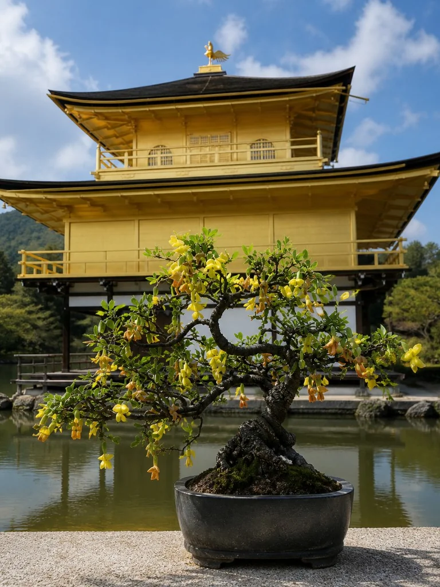
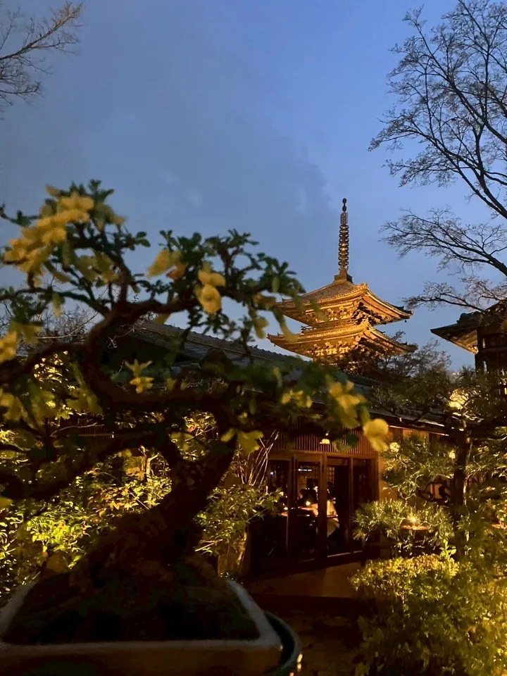
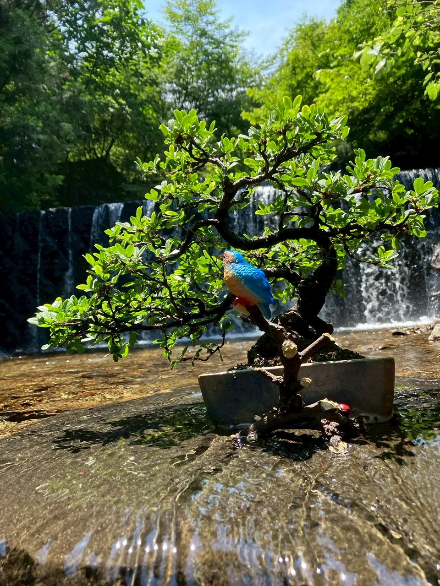
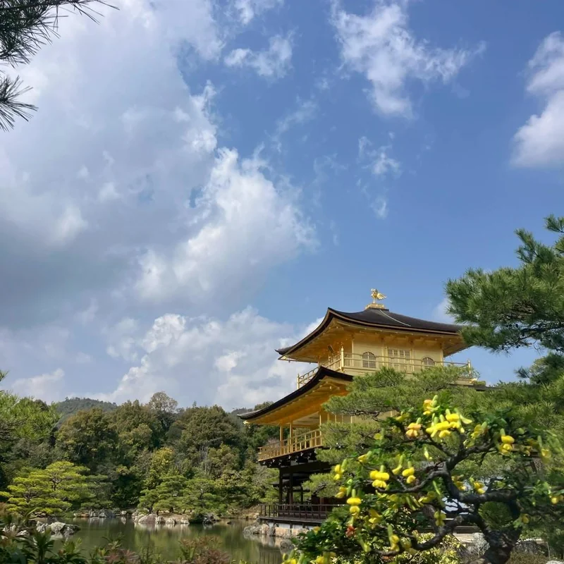
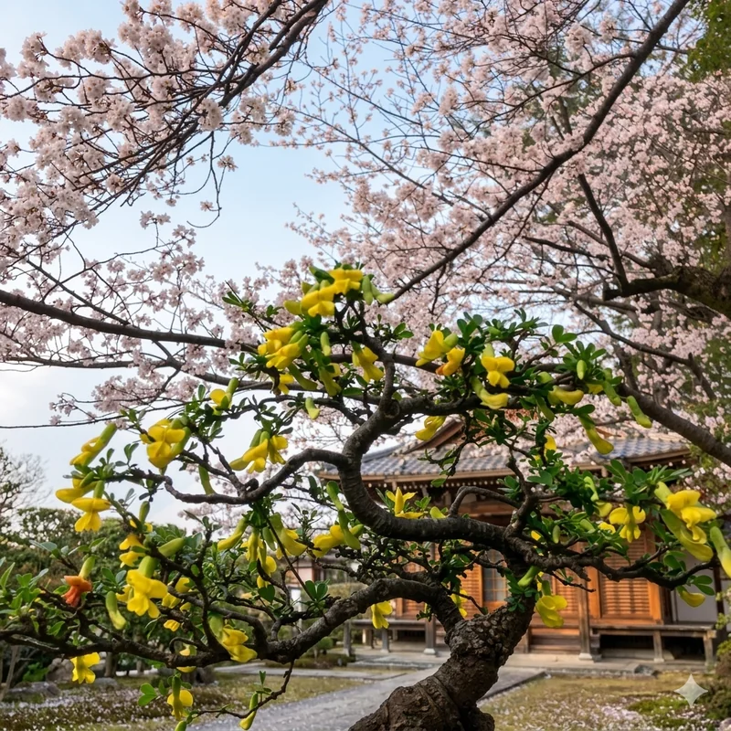
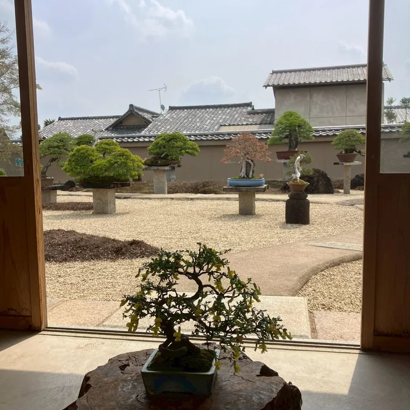

金雀花 樹齢 約50年
撮影：金閣寺展示時

夜の京都にて
Atmosphere — Kyoto Night

春、金色の花が一斉に咲く姿は、
まるで千の光が枝に降り積もるかのよう。
一樹に宿る、静謐な生命の輝き。


春になると、金色の花を一斉に咲かせる。
苔盤の静かな佇まいと、まばゆい花の対比が、この一樹の魅力です。
この樹は、花の季節になると一気に華やぎます。普段の静かな佇まいと、開花時のまばゆさの差が大きく、その変化そのものが作品の魅力です。この盆栽は、文人縁の活動の中でも「文化を運ぶ盆栽」「人の記憶に残る盆栽」として象徴的な存在です。

先月花房を訪れた際、花が満開の時期に金閣寺へ持参し、多くの外国人観光客の方々と写真を撮る機会がありました。この盆栽は、文人縁の活動の中でも「文化を運ぶ盆栽」「人の記憶に残る盆栽」として象徴的な存在です。

元・巨人軍 柴田勲氏所有歴あり。受賞歴として「盆栽新世紀」コンテスト優勝。その輝かしい来歴が、この樹の品格と価値をさらに高めています。

徳川ゆかりの盆栽や樹齢500年級の盆栽が飾られる空間にも並んだ経験を持ちます。
中国北部を原産とするマメ科の落葉樹。サクラが散る頃に咲く鮮やかな黄色い花を観賞するため、庭木、垣根、花材などに使われる。中国名は「金雀花」で、和名のムレスズメ（群雀）はこれを日本風にアレンジしたもの。日本へ渡来したのは江戸時代とされる。
ムレスズメの開花は４〜６月で、長さ２〜３センチの花が葉の脇で下向きに咲く。花はエニシダに似た蝶形だが、花の後方にある萼筒はエニシダのそれよりも長く、よく目立つ。咲き始めは黄色だが、次第に赤みを帯びてくる。季節外れの狂い咲きも多い。
細い枝に雀が並んでとまっているように見えためムレスズメになったという説が分かりやすいが、中国での「雀」は日本でいうスズメではなく、黄色い羽毛を持つヒワの仲間のこと。また、別名キンケイジのキンケイ（金鶏）は、中国やミャンマーに生息するキジの仲間。
葉は二対の小葉からなる羽根状で、先端１枚がない「偶数羽状複葉」。枝先側の２枚の方が大きく、短い枝では束になって生じるが、長い枝では互い違いに生じる。
主だった幹はなく、細い枝が地際から多数生じる。樹皮には黄褐色の斑点があるが、成長に伴って剥離しやすい。枝にあるトゲは前年の葉軸や托葉から変化したものだが、触れてもそれほど痛くない。
発酵させたムレスズメの根から抽出したエキスは、ファンデーションなどのスキンケアに使われる。
花の満開時に金閣寺へ持参。外国人観光客との交流多数。
徳川ゆかりの盆栽、樹齢500年級の盆栽が並ぶ空間での展示経験あり。
受賞歴として「盆栽新世紀」コンテスト優勝。来歴に確かな実績を持つ。
著名な前所有者のもとで大切に育てられてきた品格ある一樹。
春〜秋は屋外の日当たりの良い場所で管理します。直射日光を好みますが、夏の西日は避けてください。冬は霜から守り、霜が当たらない軒下などで管理します。
春〜秋は土の表面が乾いたらたっぷりと与えます。花時は特に乾燥しやすいため、朝夕2回を目安に。冬は乾かし気味に管理し、根腐れに注意します。
春の開花期（3〜4月）が最大の見どころです。金色の花が枝を覆う様子を正面から鑑賞ください。花後に軽く剪定することで樹形が整います。
開花後〜秋にかけて緩効性肥料を施します。植替えは2〜3年に1度、春の芽出し前が適期。根を整理し、新鮮な土に替えることで樹の活力を保ちます。